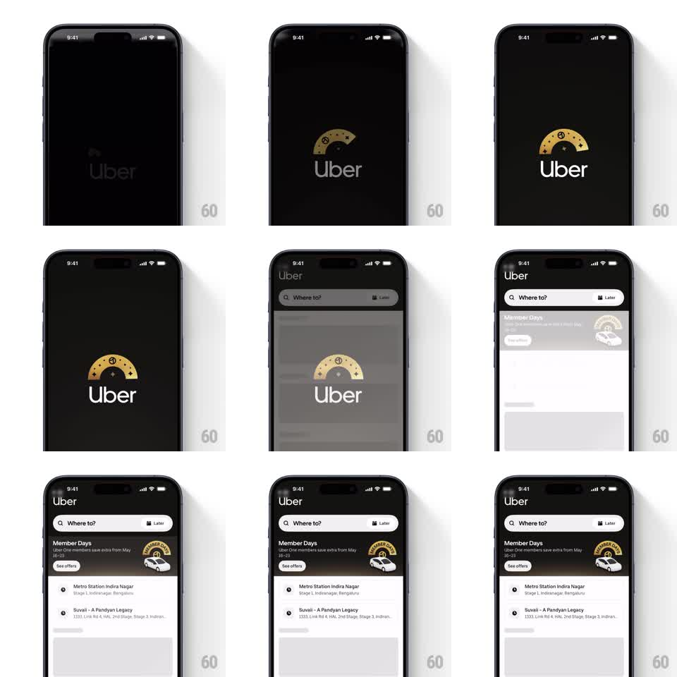

Media
Frame-by-frame

Rebuild this animation 1:1: Uber's Member Days splash - the gold Uber One arch assembles over the wordmark on black, then the whole splash slides up to reveal the light home screen in staggered springs.

Rebuild this animation 1:1: Uber's Member Days splash - the gold Uber One arch assembles over the wordmark on black, then the whole splash slides up to reveal the light home screen in staggered springs. ## Integration Integration: stack-agnostic spec - springs given as stiffness/damping, timed motions as duration + curve; map every value to your framework and animation library of choice. ## Scene Black splash: the Uber wordmark at center with the Uber One gold arch above it - a half-circle badge with a ribbon tail, small stars, and the membership mark at its center. Home screen behind: "Where to?" search bar with a "Later" chip, a "Member Days" banner (gold arch, car illustration, "Uber One members save extra from May 16-23", "See offers" button), and saved-place rows (Metro Station Indira Nagar, Suvaii - A Pandiyan Legacy). ## Motion spec Pattern: emblem assembly on splash, then slide-up reveal with staggered home entrance. - The wordmark fades in (300ms), then the gold arch draws itself above it (arc stroke, 500ms), stars pop in around it (scale 0 -> 1, spring ~400/15, 60ms stagger), and the center badge zooms in (scale 0.5 -> 1.1 -> 1, spring ~280/14). - After a 600ms hold, the splash slides up as one sheet (500ms, ease-in-out), revealing the home screen beneath. - Home elements stagger in: search bar first (fade + rise 12pt, spring ~320/24), then the Member Days banner (scale 0.95 -> 1, spring ~300/20), then the saved-place rows (fade + rise 10pt, 220ms each, 90ms apart). - The banner's car illustration rolls in from the right (translate + slight tilt settle, spring ~260/20). ## Calibration - The splash is one rigid sheet - wordmark and arch exit together, no parallax between them. - Gold is muted champagne, not yellow; the black splash stays pure. ## Reduced motion Splash crossfades to home (300ms); home elements fade together. ## Don't miss - The arch sits directly above the wordmark, centered - it never overlaps the letters. - The home reveal is staggered top-to-bottom; the banner is the hero of that entrance.